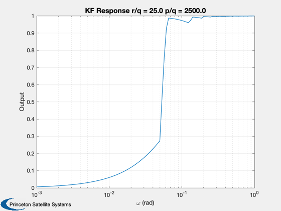

Frequency response for a Kalman filter with an oscillator as the model.
Does a sine wave sweep. You can vary the measurement noise, plant noise and initial covariance to see how the response varies.
Since version 9. ------------------------------------------------------------------------- See also C2DZOH, KFilter, Plot2D -------------------------------------------------------------------------
Contents
%-------------------------------------------------------------------------- % Copyright 2010 Princeton Satellite Systems, Inc. All rights reserved. %--------------------------------------------------------------------------
Oscillator plant
%----------------- w = 1; % Natural frequency a = [0 1;-w^2 0]; b = [0;1]; % Measuring position only %------------------------ h = [1 0]; % Time step. This needs to be fast enough to accommodate the input % frequencies %----------------------------------------------------------------- dT = 0.1; % Discretize the plant using a zero order hold %--------------------------------------------- [phi,gam] = C2DZOH(a,b,dT); %------------------------------------------------------------
Vary the next 3 parameters snd see how the response changes
%------------------------------------------------------------ % Initial covariance %------------------- p = eye(2); % Measurement noise covariance %----------------------------- r = 0.1^2; % Plant covariance %----------------- q = 0.02^2*eye(2);
Initialize the simulation
%-------------------------- nSim = 1000; % Check these frequencies %------------------------ omega = logspace(-3,0,100); % Allocate memory %---------------- xPlot = zeros(1,length(omega)); for k = 1:length(omega) % Initialize the filter %---------------------- xEst = [0;0]; xMax = 0; t = 0; % Run the filter %--------------- for j = 1:nSim % Measurement with random noise %------------------------------ z = sin(omega(k)*t); % Conventional Kalman Filter %--------------------------- xEst = KFilter( r, phi, q, h, xEst, z, p ); % Find the peak response %----------------------- xMax = max(xMax,xEst(1)); % Update time %------------ t = t + dT; end % Filter loop xPlot(1,k) = xMax; end % Sine sweep loop
Plot the results
%----------------- tS = sprintf('KF Response r/q = %4.1f p/q = %4.1f',r/q(1,1), p(1,1)/q(1,1)); Plot2D(omega,xPlot,'\omega (rad)','Output',tS,'xlog') %-------------------------------------- % $Date$ % $Id: 2bb958e6ca0942b7925c09d93c64b8613f303bc5 $